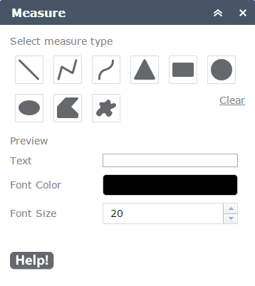
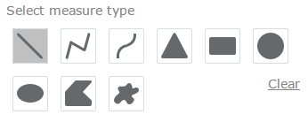
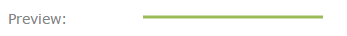
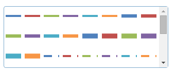
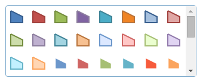
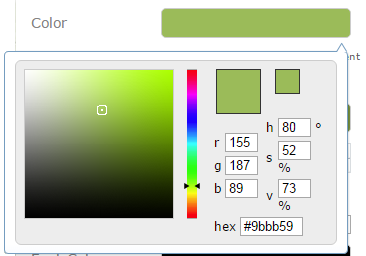
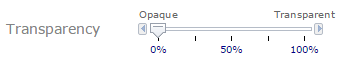
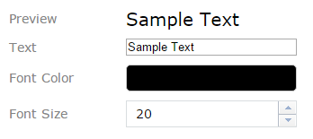
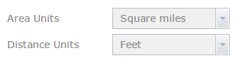
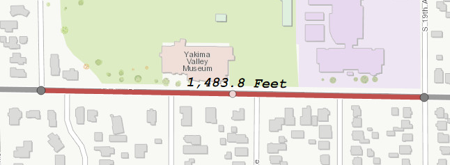

Introduction: The measure widget was derived from the draw widget for WAB. It makes use of the tools already provided in the draw widget to allow you draw shapes and lines on the map. The widget enhances this experience by interactively measuring the geometry being drawn and leaving the dimensions on the map. The measure widget also makes use of the ArcGIS API for JavaScript's geometryEngine for doing geodesic or planar calculations depending on the projection of your basemap. This means you will get accurate measurements for the shapes you draw.
for Web App Builder
Quick Start: Start by selected the type of measurement that you would like to make. Make adjustments to the color, style, transparency and width of the shape being drawn. You can also change the text color and size. The polyline and polygon shapes require you to click or tap at different locations around the map. The other shape types require you to click or tap and drag to draw the shape. With a little practice, you can draw shapes to best suit your needs.
Editing: The Lines, Polylines and Polygons you have drawn are editable. You can SHIFT click a shape and the vertexes will be displayed that you can click and drag to change the shape. As you do this, the dimension of the segment(s) will change too. You can also delete individual measures by doing a CTRL click. More specific instructions about editing below. Note (10/07/2015): Editing does not work properly on Internet Explorer. The mouse events don't fire properly when editing a line in IE.
Select Measure Type: Use this portion of the dialog to select which type of shape you would like to draw and measure. The selected tool will be highlighted by displaying a lighter gray background. With a tool selected you are ready to draw on the map. When you have completed drawing the desired shape, no tools will be selected. Clicking the Clear link will remove all measured shapes from the map.
Preview: Displays what the line or polygon will appear when drawn on the map. As you make changes to the color or size, it will be reflected in the preview.
Predefined Symbols: These lists display predefined symbols to give you a good starting point for the shape you are going to draw. You can be more specific about color, line width or type as shown below.
Color, Outline Color, Font Color: Click the associated color box to display a color picker dialog that will let you choose any color. You can be very precise with color values using the RGB, HSV or HEX settings. This will change the color of the line draw, the fill of a polygon or the color of the text used for measuring.
Transparency: Use the slider to set how transparent a line or or fill will be when a shape is drawn.
Text Properties: The preview will display what the text will look like for each measure displayed on the map when drawing a new shape. The preview text will also interactively update as a segment is being drawn, as will the Text textbox. You can adjust the size of the text by keying in a numeric value or using the up and down arrows to increase or decrease the size. Clicking the Font Color box will display a color picker that will allow you to choose the color of the text used for measuring.
Area Units and Distance Units: Use the drop down boxes to select your preferred units of measure.
